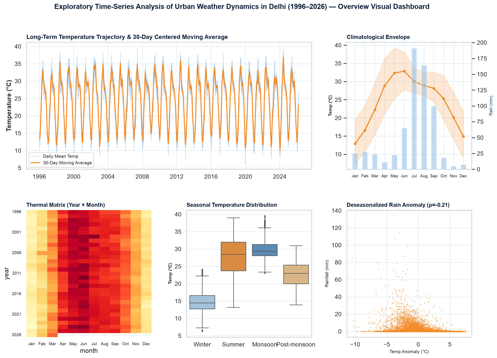
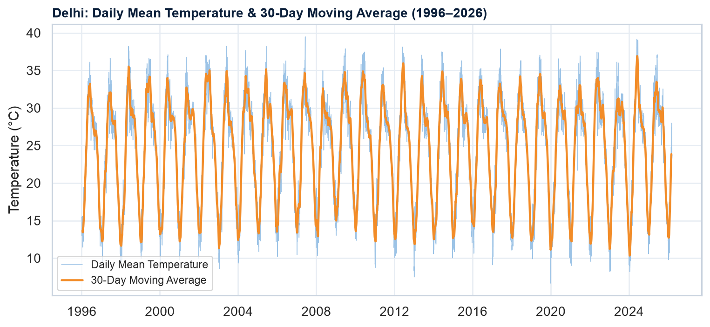
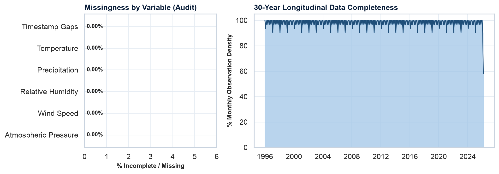
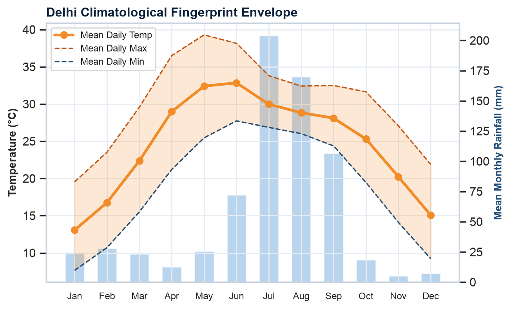
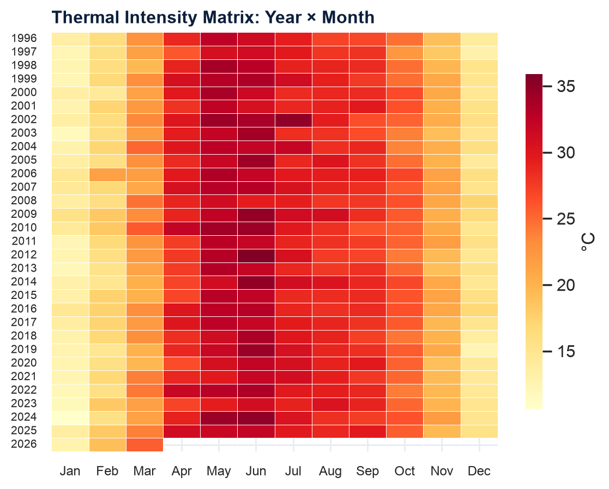
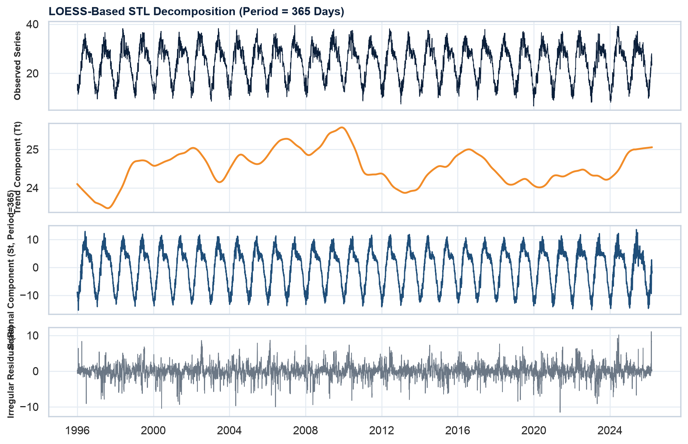
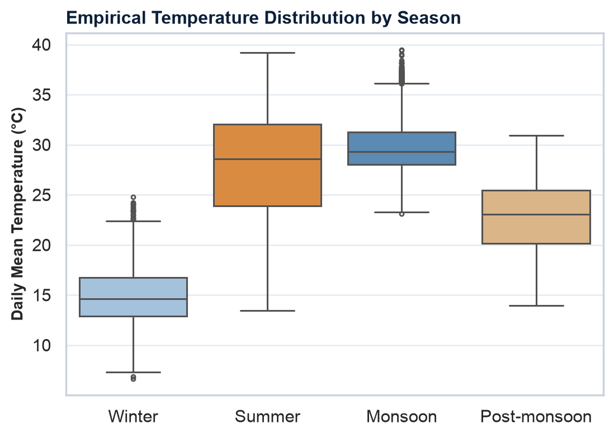
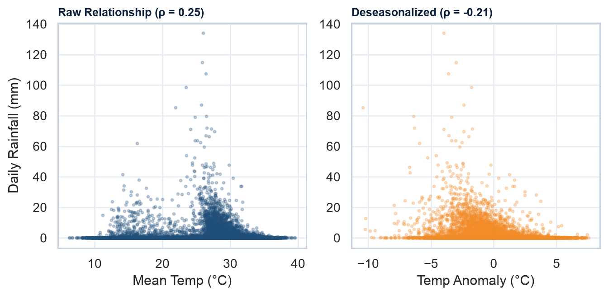

Raw Volume
264,840
Hourly points (1996–2026)
Continuity & Gaps
0 Gaps
0 duplicate timestamps (100%)
Daily Series Length
11,035
Days aggregated (≥500 required)
Seasonal Strength (Fs)
0.936
Dominant yearly periodicity
Thermal Swing
19.9°C
Jan (12.9°C) → Jun (32.8°C)
Stationarity (ADF)
-10.60
p-value < 10⁻¹⁸ (Unit-root rejected)
📌 Milestone 1 Synopsis Scope & Evaluation Compliance
This phase establishes the foundational time-series problem formulation, data quality verification, climatological envelopes, and LOESS structural decomposition. In strict compliance with course guidelines, no predictive forecasting models are executed during Phase 1. Baseline statistical models (ARIMA/SARIMA, Holt-Winters) are scheduled for Phase 2.
📊 Complete 7-Figure Overview Dashboard
High-Resolution Composite
Figure 00: Multi-Panel Visual Dashboard. Incorporates all 7 exploratory time-series figures: 30-day centered moving average trajectory, data continuity audit, climatological envelope, thermal intensity matrix (Year × Month), LOESS STL decomposition, empirical seasonal boxplots, and deseasonalized temperature-precipitation scatter. Click image to expand in full resolution.
📈 Figure 1: 30-Year Temperature Trajectory

Figure 1: Long-Term Trajectory & 30-Day Moving Average. Daily mean temperature (light blue) with centered 30-day moving average (orange). Serves as an exploratory visual smoothing aid only.
🔥 Top 5 Hottest Days
| Rank | Date | Max Temp |
|---|---|---|
| #1 | 26 May 1998 | 46.9 °C |
| #2 | 30 May 2024 | 46.2 °C |
| #3 | 28 May 1998 | 46.2 °C |
| #4 | 29 May 2024 | 46.1 °C |
| #5 | 24 May 1998 | 46.0 °C |
❄️ Top 5 Coldest Days
| Rank | Date | Min Temp |
|---|---|---|
| #1 | 31 Dec 2019 | 1.3 °C |
| #2 | 06 Jan 2013 | 1.9 °C |
| #3 | 01 Jan 2020 | 1.9 °C |
| #4 | 28 Dec 2019 | 2.0 °C |
| #5 | 30 Dec 2019 | 2.2 °C |
🔍 Figure 2: Data Quality & Missingness Audit

Figure 2: Variable Completeness & Temporal Continuity. Audit confirms exactly 0.00% missing values across all primary columns and 100% continuous monthly observation presence from 1996 through 2026.
📋 Dataset Verification Checklist
| Verification Criterion | Result | Status |
|---|---|---|
| Hourly Observations | 264,840 | Verified |
| Daily Observations | 11,035 (≥500 required) | Pass |
| Duplicate Timestamps | 0 duplicates | Pass |
| Temporal Gaps | 0 missing slots (100.0%) | Pass |
| Source License | CC0: Public Domain | Verified |
| Kaggle Publisher | sandeepgupta09 | Verified |
Observation: Unlike many raw station records plagued by instrumentation cutouts, this dataset provides a completely contiguous 30-year grid suitable for multi-scale time series decomposition.
☀️ Figure 3: Climatological Thermal Envelope

Figure 3: Thermal Range & Rainfall Profile. Monthly climatological mean, daily max, and daily min envelopes. Peak thermal stress occurs in June (mean 32.8°C), while coldest temperatures settle in January (mean 12.9°C).
🔥 Figure 4: Year × Month Thermal Matrix

Figure 4: Longitudinal Thermal Heatmap (1996–2026). Demonstrates the stability of annual seasonality across all 30 individual calendar years, affirming deterministic yearly cycles.
🧩 Figure 5: LOESS STL Structural Decomposition

Figure 5: Additive LOESS Decomposition (Period = 365 Days). Separates the temperature signal into Observed ($Y_t$), Trend ($T_t$), Seasonal ($S_t$), and Residual noise ($R_t$).
📐 Decomposition Metrics
| Component Metric | Formula / Value |
|---|---|
| Seasonal Strength (Fs) | 0.936 (0 to 1 scale) |
| Trend Strength (Ft) | 0.082 |
| Residual Std Dev | 1.79 °C |
| Decomposition Period | 365 Days (Annual) |
| Additive Model | Y_t = T_t + S_t + R_t |
💡 Scientific Interpretation
Seasonal strength $F_s = 0.936$ overwhelmingly dominates trend strength $F_t = 0.082$. This proves that Delhi's ambient temperature variance is predominantly governed by cyclic solar insolation rather than short-term trend shifts, establishing the scientific foundation for seasonal baseline models (SARIMA / Holt-Winters) in Phase 2.
📦 Figure 6: Empirical Seasonal Boxplots

Figure 6: Seasonal Spread. Compares interquartile ranges, medians, and outliers across Winter (Dec–Feb), Summer (Mar–May), Monsoon (Jun–Sep), and Post-Monsoon (Oct–Nov).
🌧️ Figure 7: Temperature–Rainfall Coupling

Figure 7: Raw vs. Deseasonalized Associations. Raw Spearman ρ = 0.25 (spurious summer confound) vs. Deseasonalized Anomaly ρ = -0.21 (evaporative cooling effect). Monsoon accounts for 78.2% of total rainfall.
📐 Statistical Stationarity & Unit-Root Tests
| Diagnostic Test | Test Statistic | Critical Value (1%) | p-value | Inference |
|---|---|---|---|---|
| Augmented Dickey-Fuller (ADF) | -10.6033 |
-3.431 |
6.09e-19 | Stationary (No Unit Root) |
| KPSS Test (Level Stationarity) | 0.0185 |
0.739 |
0.1000 | Stationary (p > 0.05) |
Statistical Significance: Both tests confirm that the raw daily temperature series fluctuates around a stable climatological mean without an explosive stochastic unit root drift.
🔄 Autocorrelation (ACF) Memory
| Lag Horizon | ACF Value (ρ) | Temporal Interpretation |
|---|---|---|
| Lag 1 (1 Day) | 0.989 | High inertial day-to-day persistence |
| Lag 7 (1 Week) | 0.932 | Strong weekly synoptic persistence |
| Lag 30 (1 Month) | 0.770 | Smooth intra-seasonal transition |
| Lag 365 (1 Year) | 0.886 | High annual cyclical memory |
🔬 Review of Existing Meteorological Forecasting Systems
Rubric Criterion| Approach / Paradigm | Key Characteristics | Typical Limitations | Project Alignment |
|---|---|---|---|
| Numerical Weather Prediction (NWP) | Physics-based fluid dynamics & atmospheric equations | Heavy supercomputing overhead; localized grid tuning difficulties | Benchmark context; out of scope for time series |
| Classical Statistical (ARIMA / SARIMA) | Linear autoregressive & moving average models | Assumes linearity; limited multi-step forecast flexibility | Planned Phase 2 baseline models |
| Holt-Winters Exponential Smoothing | Triple exponential smoothing (level, trend, season) | Fixed linear parameters; prone to drift over long horizons | Planned Phase 2 baseline benchmark |
| LOESS Decomposition (STL) | Non-parametric loess smoothing & component filtering | Purely descriptive; requires secondary model for projection | Phase 1 exploratory framework |
| Machine Learning (XGBoost) | Gradient boosted decision trees on engineered lags | Requires manual feature engineering; sensitive to extrapolation | Planned Phase 3 ensemble benchmark |
| Deep Learning (LSTM) & Prophet | Recurrent neural sequence modeling & additive Fourier models | Higher training compute; hyperparameter tuning overhead | Planned Phase 3 advanced models |
🚀 Multi-Phase Course Roadmap
Milestone 1 (Synopsis Phase - Completed)
- Dataset acquisition, schema alignment & quality auditing
- Temporal continuity verification (0 missing slots)
- Climatological thermal envelope & monthly extremes
- LOESS STL decomposition (Fs = 0.94)
- Feasibility analysis & 12-slide synopsis deck
Milestone 2 (Mid-Sem Phase)
- Stationarity differencing & transformations
- ACF / PACF order identification (p, d, q) x (P, D, Q)
- ARIMA, SARIMA, and Holt-Winters models
- Baseline evaluation metrics: RMSE, MAE, MAPE
- Residual diagnostics (Ljung-Box test)
Milestone 3 (Final Phase)
- Feature engineering: rolling statistics, lag terms
- XGBoost regressor benchmarking
- LSTM recurrent neural sequence forecasting
- Facebook Prophet additive model comparison
- Comprehensive benchmark & stakeholder framework
📑 12-Slide Synopsis Presentation Structure
📥 Download .pptxThe slide deck has been compiled with precision to fit the strict 12-slide ceiling, formatted with high-contrast executive theme and speaker notes on every slide.